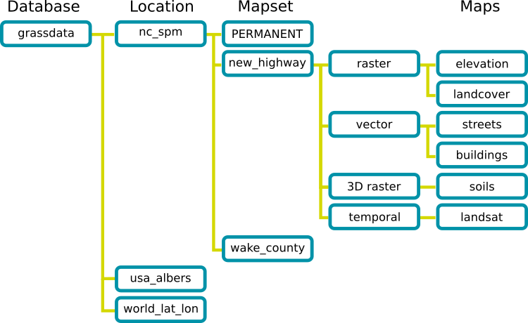

Geographic Resources Analysis Support System
GRASS GIS, commonly referred to as GRASS (Geographic Resources Analysis
Support System), is a free Geographic Information System (GIS) software
used for geospatial data management and analysis, image processing,
graphics/maps production, spatial modeling, and visualization. GRASS GIS
is currently used in academic and commercial settings around the world,
as well as by many governmental agencies and environmental consulting
companies. GRASS GIS is an official project of the Open Source Geospatial
Foundation (OSGeo).
1. Graphical startup of GRASS GIS
For text-based startup see below.
After launching GRASS GIS, the startup screen will open:
![[GRASS GIS start screen]](grass_start.png)
Selecting the GIS Database directory
GRASS data are stored in a directory referred to as DATABASE
(also called "GISDBASE"). This directory has to be created
with a file manager or the mkdir command, before starting to work
with GRASS. Within this DATABASE, the projects are organized
by project areas stored in subdirectories called LOCATIONs.
Selecting the LOCATION (a project)
A LOCATION is defined by its coordinate system, map projection and
geographical boundaries. The subdirectories and files defining a
LOCATION are created automatically when GRASS is started the first
time with a new LOCATION. It is important to understand that each
projection stays in its own LOCATION.
See the "Location Wizard" to
easily create a new LOCATION from scratch from a geocoded file, by
defining the parameters or by selecting the corresponding EPSG projection
code.
See ![[(5)]](circle_5.png) to directly download a
sample LOCATION into the DATABASE.
to directly download a
sample LOCATION into the DATABASE.
Selecting the MAPSET (a subproject)
Each LOCATION can have many MAPSETs. Each MAPSET is a LOCATION's
subdirectory. New MAPSET can be added at GRASS startup (see related
button).
Location Wizard
The "Location Wizard" let's you easily create a new LOCATION. You
will be guided through a series of dialogues to browse and select
predefined projections (also via EPSG code) or to define individual
projections. You can also create new LOCATION easily from a georeferenced
data file (e.g., SHAPE file or GeoTIFF, see below). Find below also some
rules to define the default raster resolution for a new LOCATION.
Download a sample LOCATION
In the "Location Wizard" there is also a Download button that allows you to
directly download a ready-to-use LOCATION into the DATABASE. You can
choose among different sample LOCATIONS that are currently available at the
Download
section in the GRASS GIS website.
Start GRASS
Once you have selected an existing LOCATION/MAPSET or defined a new
one, you can enter GRASS. The graphical user interface
wxGUI will open and provide you with a
menu system, map visualization tool, digitizer, and more.
2. Background: GRASS GIS Location structure
A LOCATION is simply a set of directories which contains the GRASS
data of a project. Within each LOCATION, a mandatory "PERMANENT"
MAPSET exists which contains projection information and some more
definitions. It can be used to store the base cartography in it as
"PERMANENT" is visible to all users accessing a LOCATION.

Fig. 1: GRASS GIS 7 location structure
Creating and maintaining MAPSETs
One motivation to maintain different MAPSETs is to store maps
related to project issues or subregions. Another motivation is to
support simultaneous access of several users to the map layers
stored within the same LOCATION, i.e. teams working on the same
project. For teams, a centralized GRASS DATABASE would be defined
in a shared network file system (e.g. NFS). Besides access to his/her own
MAPSET, each user can also read map layers in other users' MAPSETs,
but s/he can modify or remove only the map layers in his/her own
MAPSET.
You can learn more about mapsets and how to seamlessly access maps
found in another MAPSET of the same LOCATION in the
g.mapsets documentation.
The role of the "PERMANENT" MAPSET
When creating a new LOCATION, GRASS GIS automatically creates a special
MAPSET called PERMANENT where the core data for the project can be
stored. Data in the PERMANENT MAPSET can only be added, modified or
removed by the owner of the PERMANENT MAPSET; however, they can be
accessed, analyzed, and copied into their own MAPSET by the other
users. The PERMANENT MAPSET is useful for providing general spatial
data (e.g. an elevation model), accessible but write-protected to all
users who are working in the same LOCATION as the database owner.
To manipulate or add data to PERMANENT, the owner would start
GRASS and choose the relevant LOCATION and the PERMANENT MAPSET. This
mapset also contains the DEFAULT_WIND file, which holds the default
region boundary coordinate values for the LOCATION (which all users
will inherit when they start using the database). Additionally, in
all mapsets a WIND file is kept, for storing the current boundary
coordinate values and the currently selected raster resolution. Users
have the option of switching back to the default region at any time.
3. Creating a GRASS Database with Sample Data
To create the GRASS database:
- Find a place on your disk where you have write access and that
has enough disk space to hold your spatial data.
- Create a subdirectory that will hold the general GRASS database
(e.g. using a file manager or with mkdir /data/grassdata or
mkdir /home/yourlogin/grassdata).
Sample data such as the "North Carolina" or the
"Spearfish" sample datasets may be downloaded from
http://grass.osgeo.org/download/sample-data/
and the compressed data package(s) extracted into this new database
directory.
Now you are ready to select a sample dataset in the GRASS GIS startup screen
(see above) and start the session.
4. Creating a New Location with the Location Wizard
The wxGUI graphical user interface provides a
graphical "Location Wizard" which lets you easily create a
new LOCATION for own data. You will be guided through a series of dialogues to
browse and select predefined projections (also via EPSG code) or to
define individual projections. The rules to define the resolution as
described above also apply here.
Hint: You can create new LOCATION easily from a georeferenced data file
(e.g., SHAPE file or GeoTIFF file with the related metadata properly included).
In this case you are asked whether the data itself should be imported
into the new LOCATION. The default region is then set to match imported map
and the GRASS GIS session is opened.
After defining new LOCATION, wxGUI starts automatically.
If data were already imported, you can add them into the Layer Manager now
and display them. If your LOCATION is empty you can import your data from
the menu: Go to "File" -> "Import raster/vector data" (see also the
related Wiki page on Importing data).
5. Text-based startup and location creation
GRASS GIS can be run entirely without using the graphical user interface.
For a first time startup, the following steps have to be followed:
- Create a GRASS GIS database as explained above.
- Create a new location, including it's default PERMANENT mapset,
without entering the new location:
- Using an EPSG code:
grass78 -e -c EPSG:32630 /home/user/grassdata/mylocation
- Using a georeferenced raster or vector file:
grass78 -e -c MyGeoReferenceFile.tif /home/user/grassdata/mylocation
- Create new mapset within the new location and launch GRASS GIS within
that mapset:
grass78 -c /home/user/grassdata/mylocation/mymapset
Further Reading
Please have a look at the GRASS GIS web site for tutorials and books:
http://grass.osgeo.org/documentation/.
See also
GRASS GIS 7 Reference Manual
GRASS GIS 7 startup program manual page
List of EPSG codes (Database of worldwide coordinate systems)